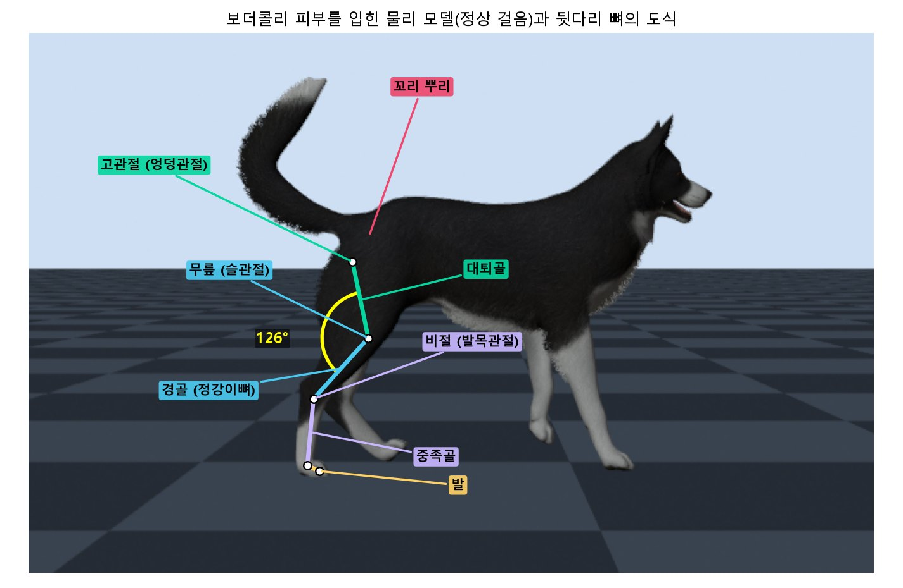
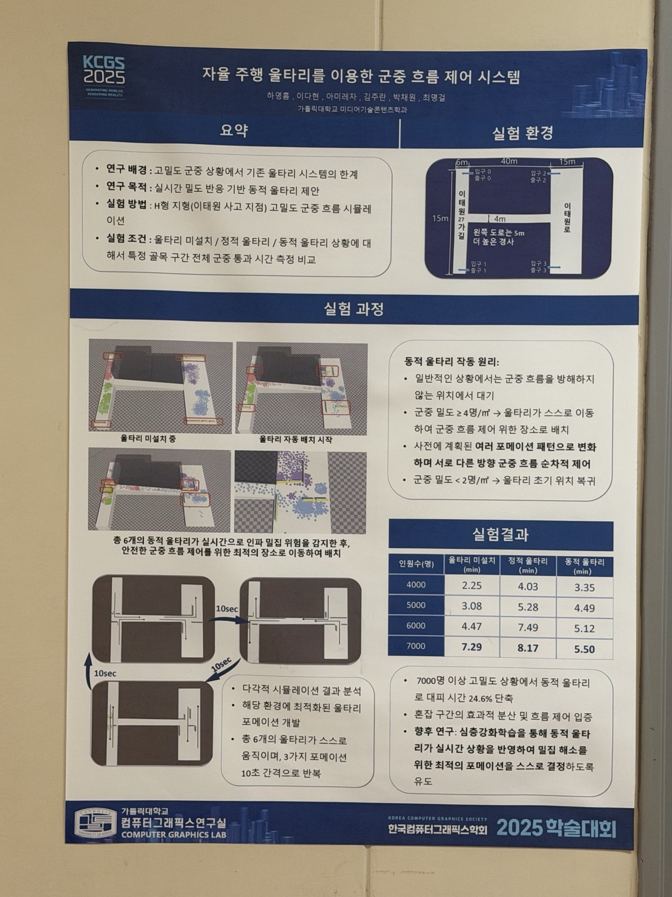
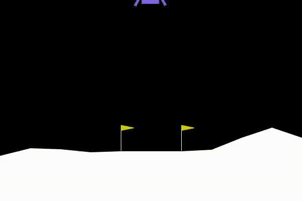

VISUAL COMPUTING · 영상 · 그래픽스 · 물리
영상 속 움직임을 읽고,
다시 만들어내는
기술을 연구합니다
컴퓨터그래픽스 연구실에서 물리 기반 시뮬레이션으로 연구를 시작했고, 지금은 단안 영상에서 반려견의 보행을 3D로 복원하는 졸업논문을 쓰고 있습니다. 공연과 전시, 문화유산처럼 사람들이 직접 보고 반응하는 콘텐츠를 가능하게 하는 기술을 만들고 싶습니다.
지금 · 반려견 보행 3D 복원 졸업논문 · 쿼레이트 CoSpace 1인 개발

2026 – 진행 중 · 졸업논문
단안 영상 기반 반려견 보행 분석
휴대폰으로 찍은 걷는 영상 하나로 3D 자세를 복원하고, 보행 주기를 뽑아 파행(절뚝거림)을 판별합니다.

2022 · KCGS 우수발표상 · 논문지 게재
외부 자력으로 움직이는 촉수 애니메트로닉스
모터를 넣지 않고 바깥의 전자석 힘만으로 가늘고 유연한 촉수형 구조를 생물처럼 움직이게 만든 연구입니다.

2025 · KCGS 2025 포스터
자율 주행 울타리를 이용한 군중 흐름 제어
군중이 위험할 만큼 몰리면 스스로 움직여 흐름을 나누는 울타리를 시뮬레이션했고, 7000명 상황에서 대피 시간을 24.6% 줄였습니다.

2024 · HCI 창의상 우수상 · 제1저자
XR 테이크아웃 카페
가상 카페의 AI 점원에게 말로 주문하면, 실제 커피머신에서 진짜 커피가 나오는 대화형 XR 공간입니다.
2025 · 박물관 전시
AI 실시간 트래킹 프로젝트
몸을 실시간으로 추적하는 트래킹 기술로 한방 침자리 체험과 미니게임들을 만들었고, 국립중앙박물관과 국립과천과학관 전시까지 이어졌습니다.
2026 – · 쿼레이트
CoSpace 공간 배치 시각화
가구에서 공장 라인, 전시 부스, 선박 내부까지 3D로 배치해 보는 공간 시각화 도구입니다.

2024 – 2025 · LUL 창립작 · 팀장
산군
조선시대를 배경으로 한 미스터리 방탈출 어드벤처. 직접 만든 팀 LUL에서 10명과 함께 만든 첫 작품입니다.

2023 · 컴퓨터그래픽스와 딥러닝
메쉬 피팅 · DQN 강화학습
구를 고양이·거미 모양으로 바꾸는 메쉬 최적화와, 달 착륙선을 DQN으로 착륙시키는 실험을 했습니다.

2023 · Maya
메롱해치 3D 모델링
안예은의 노래 ‘메롱 해치’ 뮤직비디오를 위한 해치 캐릭터를 Maya로 모델링했습니다.
2025 · 단독 개발
AI와 끝말잇기
AI 캐릭터 ‘Wordy’와 목소리로 끝말잇기를 주고받는 대화형 게임입니다.
 2024SIGGRAPH Asia 2024 도쿄 · 학생 봉사자전시 · 등록 · 체험 부스
2024SIGGRAPH Asia 2024 도쿄 · 학생 봉사자전시 · 등록 · 체험 부스 2022SIGGRAPH Asia 2022 대구 · 학생 봉사자학회 운영 · 참가자 지원
2022SIGGRAPH Asia 2022 대구 · 학생 봉사자학회 운영 · 참가자 지원 2024게임 개발 팀 LUL(Level Up Labs) 창립창립 · 팀 리드2021 – 2023라온S 회장 · 학과 공식 소모임회장 · 지원사업 기획
2024게임 개발 팀 LUL(Level Up Labs) 창립창립 · 팀 리드2021 – 2023라온S 회장 · 학과 공식 소모임회장 · 지원사업 기획 2021아리랑스쿨 기자단 ‘아리스토텔러스’ 7기전통문화 기자단
2021아리랑스쿨 기자단 ‘아리스토텔러스’ 7기전통문화 기자단 2021 – 2022스타티스트(STARTIST) · 창업대학 기관동아리창업 · 홍보 영상
2021 – 2022스타티스트(STARTIST) · 창업대학 기관동아리창업 · 홍보 영상 2022NVIDIA 딥러닝 교육 이수교육
2022NVIDIA 딥러닝 교육 이수교육
색채학
색의 기본 성질부터 색 체계, 퍼스널 컬러, 트렌드 컬러 기획까지.
Fashion Illustration패션 일러스트레이션
인체의 비례와 구조, 옷이 몸 위에 걸리는 모습을 그리는 법.
CADCAD 공간 설계
명동 애플스토어를 분석해 도면과 프레젠테이션 보드를 만들었습니다.
Drafting & Spatial Studies제도와 공간 연구
가상 공간을 만들기 위해 시작한 제도 공부.
Storyboard & Animatics스토리보드와 애니매틱스
영상 제작의 프리프로덕션: 기획, 스토리보드, 애니매틱스.
Art Work그림
손으로 직접 그린 그림 작업.
MayaMaya 3D 그래픽스
모델링, 셰이딩, 스크립팅, 이펙트, 렌더링 파이프라인.